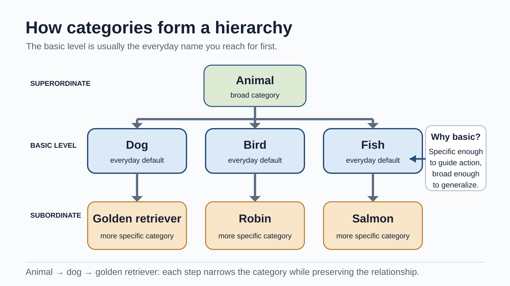
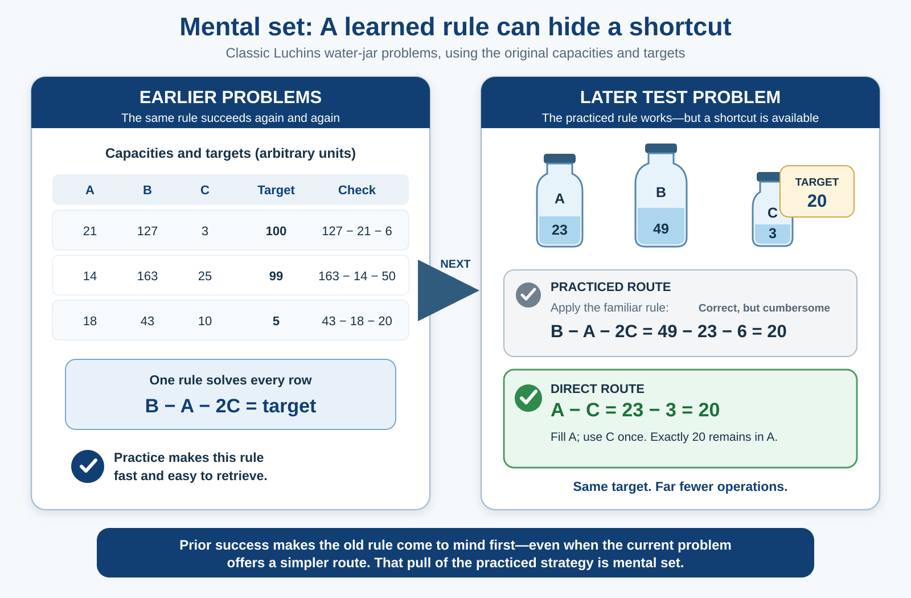

Thinking, Language & Intelligence
Why memorize any of this? If you need a fact, you can search for it—or ask an AI, which will hand it over in seconds, fluently and with total confidence. It is a fair question, and it hides a costly assumption: that having access to information is the same as knowing how to use it.
It is not. A search returns a definition; an AI returns an explanation. Neither supplies the thing in your head that decides which distinction matters, notices when two confident claims contradict each other, or catches an answer that is wrong. You cannot evaluate information without something to evaluate it against.
But the opposite belief—that college is mainly about piling up facts—is just as wrong. Thinking runs on stored knowledge, yet isolated facts are inert. What makes knowledge useful is that it is organized: it tells you what belongs together, which differences matter, and what is likely to happen next. Psychologists call these organized representations concepts, and your mind runs on them. A radiologist glances at a scan and sees the tumor; a chess master glances at a board and sees the threat. Neither is remembering harder than you are. Each has built better concepts, and better concepts make better predictions than raw memory ever could—under real constraint, because working memory is small, time is short, and the evidence is almost always incomplete.
That gives us the loop that runs through the whole chapter: build a model, use it to predict, check it against the evidence, and revise it when it misses. This is not a claim that every thought marches through four conscious steps, or a theory of the entire mind. It is a way to track what good thinking actually requires. Concepts are how we build. Heuristics let us predict fast. Biases show where building, predicting, checking, or revising goes wrong. Language lets us share and inherit conceptual distinctions. Intelligence tests try to measure a few of the abilities involved. The same structure that makes you efficient can also make you confidently wrong—which is where this gets interesting, and where a fluent machine is no help at all.
Without looking anything up, write down your answer: are there more English words that begin with k, or more with k as the third letter? Write one sentence explaining how you decided. You will return to this after Section 2.
Where This Fits
Why is one good concept worth more than a hundred memorized facts? Chapter 8 explored how memory encodes, stores, and reconstructs experience. This chapter asks what the mind does with what memory retains: it builds concepts, uses them to predict and solve problems, communicates them through language, and tries to measure some of the abilities involved.
The reason is constraint. Working memory holds only a little at once, and long-term memory does not preserve every episode in full. A limited system cannot treat each situation from scratch, so it extracts the regularities that let it predict—what tends to go with what, what usually follows what. A concept is the compressed result.
But the connection is not simply “compression.” Compactness alone does not make a concept good. A useful concept supports accurate generalization, prediction, and transfer—and changes when the evidence no longer fits. That is also why concepts do not improve from more exposure alone. Experience sharpens a concept only when it reveals the structure that distinguishes one case from another. Comparing carefully chosen contrasting cases, paired with an explanation of why the difference matters, exposes distinctions a definition alone leaves invisible; interleaving examples rather than studying them in tidy blocks does related work, even though both feel slower while you do them (Schwartz & Bransford, 1998; Kornell & Bjork, 2008). Piling up more of the same is not the same as learning to see what matters.
One loop organizes the chapter: build a concept, use it to predict, check the prediction against the world, and revise the concept when it misses. Concepts and categories are how minds build. Expertise and problem solving are prediction working well—and, sometimes, prediction so practiced it blocks a better answer. Heuristics and biases are what happens when a model is applied without the check. Language is how humans label, share, and inherit conceptual distinctions. Intelligence is how psychologists try to measure reasoning with novel problems and with accumulated knowledge. The central question is therefore not whether facts or concepts matter more—concepts must be built from facts. It is whether that knowledge has become organized well enough to guide a new judgment.
Connections to other chapters: Working memory (Ch. 8) is the active workspace for reasoning and problem-solving. Attention and perception (Ch. 4) shape what information enters a judgment in the first place. Learning (Ch. 7) changes the expectations and strategies we bring to later problems. Development (Ch. 10) changes concepts, language, and cognitive performance across the lifespan. Social cognition (Ch. 11) applies many of the same judgment processes to people and groups.
Learning Objectives
- Distinguish concepts, prototypes, and exemplars, and explain how category structure supports prediction and generalization.
- Contrast algorithms and heuristics and explain how mental set, functional fixedness, and insight affect problem solving.
- Explain how fast and deliberate thinking can produce predictable errors in judgment.
- Describe the structure of language and explain why language acquisition is best understood through biological preparedness, statistical learning, and social experience rather than any one factor alone.
- Distinguish linguistic determinism from weaker forms of linguistic relativity and evaluate the strength of different examples.
- Compare g, fluid and crystallized intelligence, Gardner's and Sternberg's proposals, and explain how standardization, reliability, validity, and the Flynn Effect constrain the interpretation of IQ scores.
Section 1: Concepts, Categories, and Problem Solving
Concepts as Organized Models
Your brain does not treat every experience as an isolated event. It organizes knowledge into concepts—mental representations of categories, relations, and ideas. A concept is the mind's basic tool for prediction. It lets you recognize a dog you have never seen, understand why negative reinforcement is not punishment, and identify a study as an experiment even when its details differ from every experiment you have met before. Recognize the animal across the yard as a dog and, without checking a list, you already expect fur, four legs, and barking, and you predict how it will act as you approach. Without concepts, each new case would have to be interpreted from scratch—something a limited system cannot afford.
Consider what expertise reveals about this. Chase and Simon (1973) showed chess masters and novices a board from a real game for five seconds, then asked them to reconstruct it. Masters placed the pieces almost perfectly; novices managed a handful. The obvious explanation—masters have better memory—is wrong. When the same pieces were arranged randomly, the masters' advantage vanished. The master does not remember more squares. Years of play have built richer concepts—familiar configurations of attack and defense—so a meaningful board compresses into a few large, predictive chunks instead of thirty separate pieces. Same limited memory; better concepts; better prediction. This is the engine of the chapter, and it is exactly what a semester of hard study is meant to do to your mind.
Many concepts are organized around a prototype, a representation of a typical member. Hear “bird” and you may picture something closer to a robin than a penguin—though both are birds. New cases feel more or less category-like depending on how closely they resemble that prototype (Rosch, 1975). People also use exemplars: specific remembered members. You may recognize an unusual dog because it resembles one particular dog you have met rather than an abstract average. Prototypes and exemplars are not mutually exclusive, and they are not stages a learner passes through—experts do not simply graduate from prototypes to exemplars. What reliably changes with expertise is the resolution of the concept: the expert's carries finer, more diagnostic distinctions than the novice's.
Concepts can also be organized hierarchically. “Animal” is a superordinate category, “dog” is a basic-level category, and “golden retriever” is a subordinate category. The basic level is often the default in everyday naming: specific enough to guide action, but broad enough to generalize.
{kind=link}

The compression metaphor helps here, as long as we do not ask it to explain too much. Across many encounters with apples you retain relationships among fruit, food, sweetness, trees, seeds, pie, and particular episodes; you do not replay every apple before recognizing a new one. The concept preserves useful structure while discarding detail. That is efficient, and it is risky: a concept built from unrepresentative experience preserves the wrong regularities, and what gets compressed out can turn out to be what matters.

Huth and colleagues (2016) found that related meanings evoke organized, overlapping patterns across broad regions of cortex. This supports a distributed, relational model of semantic representation—not the idea that a concept is stored as one location or as a single neural assembly holding the essence shared by every member.
Concepts get better by being revised. Piaget described two ways a mind meets a new case: assimilation interprets it with the current concept; accommodation changes the concept when the case does not fit. In this chapter's terms, assimilation is prediction and accommodation is the revision that follows a failed prediction. A toddler calls every four-legged animal “doggie” until repeated correction sharpens the category. The same process, run on harder material, turns a novice into an expert—but only when the experience exposes the distinction. Seeing the hundredth ordinary dog teaches nothing new; seeing a dog beside a wolf, or a Chihuahua beside a cat, forces the concept to sharpen where it matters.
Many students begin Chapter 7 with a crude prototype: reinforcement means reward, and rewards feel good. That model handles obvious cases until it meets negative reinforcement, which removes something unpleasant rather than adding something pleasant. The old prototype misclassifies the case. The concept must be rebuilt around the defining relation: a reinforcer is a consequence that makes a behavior more likely to recur. Once the concept is organized around behavior change rather than pleasantness, it can classify cases the student has never memorized.
Algorithms and Heuristics
Problems can be approached with procedures that emphasize certainty or with shortcuts that emphasize speed.
An algorithm is a step-by-step procedure that produces the correct result when the procedure applies and is followed correctly. Long division is an algorithm. Systematically testing every possible combination can also be algorithmic. The advantage is reliability; the disadvantage is that exhaustive procedures can be slow, cognitively expensive, or impossible when the problem is poorly defined.
A heuristic is a shortcut or rule of thumb that often produces a useful answer without guaranteeing the best one. “Start with the most likely diagnosis” is a heuristic. “If it looks like a duck and quacks like a duck, treat it as a duck” is a heuristic for category assignment. Heuristics are not failed algorithms; they are often the only practical way for a limited system to act in time. In this chapter's terms, a heuristic is a fast, usually-good prediction—a model applied quickly, and, when applied without a check, the source of the characteristic errors we examine next.
The compression metaphor again helps: a heuristic retains a relationship that has predicted well often enough to become useful, while ignoring some of the detail. That trade-off explains both its efficiency and its characteristic errors.
Problem Solving: Strategies and Obstacles
Problem solving depends on how the problem is represented. You might work forward from the current state, backward from the goal, or reduce the largest gap through means-ends analysis. The wrong representation creates the wrong search space, no matter how hard you search within it—another way of saying the concept you bring determines the predictions you can make.
A mental set is the tendency to use a strategy that worked before even when a new problem permits a better one. In Luchins' (1942) water-jar studies, people first solved several problems with the same multi-step formula. Many then applied that formula to a later problem that could be solved in one simple step. Prior success had made the old strategy easier to retrieve than the new structure was to see.
{kind=link}

Functional fixedness is a related failure to see an object outside its conventional use. Before reading on, try Duncker's (1945) candle problem yourself: you have a candle, a book of matches, and a box of thumbtacks, and you must mount the candle on the wall so it burns without dripping wax on the table. Commit to a solution before you continue.
The answer is to empty the box, tack the box to the wall, and stand the candle on it. Most people struggle not because they lack a piece but because they represent the box only as a container for the tacks. What was “fixed” was the concept, not the materials—and naming your own answer first is the point: you can usually feel the moment the box stops being a container and becomes a shelf.

Insight is that sudden shift in representation—the “aha” when the box becomes a shelf or two previously separate facts snap together. It can feel instantaneous, but the real change is in how the problem is organized, not in the arrival of information that was never there (Jung-Beeman et al., 2004).
Here is the double edge that ties this section to the next. The very concepts that let an expert predict brilliantly can also capture attention and hide a better option. Bilalić, McLeod, and Gobet (2008) gave strong chess players a position that offered a familiar winning method and a faster, more elegant one. Players insisted they were searching for something better, but eye tracking showed their gaze kept returning to the squares tied to the solution they had already found. The first good idea, generated by a well-trained concept, quietly blocked the better one. Expertise is not freedom from bias; it is organized knowledge with greater power—including greater power to guide attention in the wrong direction. Expertise builds the model that predicts; the same model, applied without a deliberate check, becomes the source of the biases we turn to next.
How are mental set and functional fixedness similar? What changes at the moment of insight?
Section 2: Heuristics, Biases, and the Two-Mode View
Return to your prediction from the opener. Most people report that English has more words beginning with k than words with k in the third position. In fact, the third-position words are more common. Words beginning with k—king, key, kite—are easier to search for because dictionaries and memory organize words strongly by their initial sound. Ease of retrieval is mistaken for frequency (Tversky & Kahneman, 1973).
System 1 and System 2
One influential framework distinguishes two broad processing modes (Kahneman, 2011). System 1 is fast, automatic, associative, and often outside awareness. System 2 is slower, deliberate, attention-demanding, and capable of following explicit rules. Both are constrained by the information available to them.
System 1 is fast and associative, not inherently defective. It recognizes a friend's face, reads a familiar word, and detects many patterns accurately. System 2 is slow and deliberate, but it can rationalize a preferred conclusion or apply the wrong rule with great care. Treat the distinction as two processing modes, not as a good system fighting a bad one.

The Availability Heuristic
When estimating how frequent or probable something is, people often use the ease with which examples come to mind. This is the availability heuristic (Tversky & Kahneman, 1973).
Availability often works because common events usually are easier to recall. But ease of recall is also affected by vividness, recency, media coverage, and personal relevance. A dramatic event may be mentally available even when it is rare. A common but uneventful risk may be difficult to picture and therefore underestimated.
The Representativeness Heuristic
When judging whether something belongs to a category, people often rely on how closely it resembles the category prototype while neglecting base rates or set relations. This is the representativeness heuristic (Tversky & Kahneman, 1974).
The best-known demonstration is the Linda problem:
Linda is 31 years old, single, outspoken, and very bright. She majored in philosophy. As a student, she was deeply concerned with discrimination and social justice and participated in anti-nuclear demonstrations.
Which is more probable?
A. Linda is a bank teller.
B. Linda is a bank teller and is active in the feminist movement.
Many participants choose B. The description makes “feminist” feel representative of Linda. But every feminist bank teller is also a bank teller, so the conjunction can never be more probable than the larger category that contains it. This is the conjunction fallacy (Tversky & Kahneman, 1983).

Participants rated “bank teller and feminist” as more probable than “bank teller” because the conjunction better matched Linda's description—a vivid representation checked against resemblance instead of the set relation. Frequency and diagrammatic formats reduce the error (Gigerenzer, 1991), which shows the mistake depends partly on how the problem is represented.
Confirmation Bias and Testing a Rule
Confirmation bias is the tendency to seek, interpret, or remember evidence in ways that favor an existing belief. Once an explanation feels plausible, supportive cases attract attention and contradictory cases become easier to dismiss.
Wason's (1968) selection task shows how difficult it can be to test a rule by searching for what would prove it false. Four cards display E, K, 4, and 7. Each has a letter on one side and a number on the other. The rule is: “If a card has a vowel on one side, it must have an even number on the other.” Which cards must be turned over to test the rule?

E must be checked: an odd number behind it would violate the rule. The 7 must also be checked: a vowel behind it would violate the rule. The 4 is tempting, but an even number is allowed to have either a vowel or consonant behind it. The rule says “if vowel, then even,” not “if and only if vowel, then even.”

The task is often taught as confirmation bias because people choose a card that could support the rule and omit one that could falsify it. That interpretation is useful but incomplete: wording, content, and simple matching also affect performance. The task shows difficulty identifying diagnostic evidence, not one pure mechanism (Klayman & Ha, 1987).
The Framing Effect
A framing effect occurs when equivalent outcomes produce different choices because they are described from different reference points. In Tversky and Kahneman's (1981) Asian disease problem, people tended to prefer a certain option when outcomes were described as lives saved but preferred a gamble when the same outcomes were described as deaths. The probabilities were equivalent; the gain-versus-loss frame changed the decision.
Framing matters in medical decisions when survival rates and mortality rates describe the same outcome. It matters in public communication when the same change is presented as a gain, a loss, or an opportunity forgone. Framing should not be confused with every effect of presentation. For example, organ-donation differences between opt-in and opt-out systems primarily demonstrate the power of defaults and the status quo, not the gain/loss framing effect.
Anchoring
When making a numerical estimate, people remain influenced by an initial value, even when it is arbitrary. This is anchoring. In Tversky and Kahneman's (1974) classic demonstration, participants watched a wheel of fortune land on a number and then estimated the percentage of United Nations members that were African nations. Higher arbitrary numbers produced higher estimates.
Anchoring appears in negotiations, pricing, diagnosis, and everyday estimation. The first value does not mechanically determine the final answer, but adjustment away from it is often incomplete.
Different Shortcuts, Related Vulnerabilities
These shortcuts do not share one mechanism. Each works by throwing information away; bias appears when the problem needs exactly what that shortcut discarded.
| Judgment pattern | What becomes easy to use | What may be neglected |
|---|---|---|
| Availability | An example that comes to mind | Actual frequency or probability |
| Representativeness | Resemblance to a prototype | Base rates and set inclusion |
| Confirmation bias | Evidence compatible with a belief | Diagnostic disconfirmation and alternatives |
| Framing | A gain/loss reference point | Equivalence of the underlying outcomes |
| Anchoring | An available starting value | An estimate constructed independently of the anchor |
The AI Connection: Fluency Is Not Accuracy
AI-generated writing is often grammatical, organized, and confident, and those qualities make it easy to process. Easy processing can feel like evidence that a claim is true. The danger is not that polished prose switches off thinking; it is that a smooth answer gives you no immediate reason to slow down and inspect its parts, even when it hides one invented citation, an outdated fact, or a confident causal claim.
Use the chapter's loop deliberately: let a fluent explanation build a candidate model, then check the claims that matter. Find the original source, verify unfamiliar facts, and ask whether the evidence supports the conclusion or merely sits beside it. It is tempting to call an AI system “System 1” because its output is fast and pattern-based, but do not take the analogy literally—System 1 describes a mode of human cognition. The useful lesson is about your response to fluent output: confidence of tone is not evidence of accuracy.
A bridge from heuristics to language. The framing effect demonstrates that language does not merely report a decision problem. It helps determine which features become prominent. “Two hundred people will be saved” and “four hundred people will die” describe equivalent outcomes, but they direct attention toward different reference points. We now turn from the effects of particular wordings to the larger system that makes shared meaning possible.
Section 3: Language — From Private Meaning to Shared Symbols
Every person builds meaning from a different history. Language lets private minds coordinate through public symbols. In this chapter's compression metaphor, a word is a low-cost signal pointing toward a richer network of meaning. That economy makes teaching and culture possible, but two people can use the same word while carrying somewhat different assumptions.
Language and thought interact without being identical. Fedorenko, Piantadosi, and Gibson (2024) argue that language is primarily a tool for communication; a competing view treats it chiefly as an instrument of thought. The evidence does not settle that debate, and neither should this chapter.
The Structure of Language
Human language builds an enormous range of messages from a small set of reusable units.
| Level | What it is | Example |
|---|---|---|
| Phoneme | The smallest sound unit that can distinguish meaning | /p/ versus /b/ in “pin” and “bin” |
| Morpheme | The smallest unit that carries meaning | un- + break + -able |
| Syntax | Rules for arranging words and phrases | “The cat chased the mouse” differs from “The mouse chased the cat” |
| Semantics | Conventional meanings of words and sentences | “Bank” can refer to money or the side of a river |
| Pragmatics | How context and social expectations shape meaning | “Could you pass the salt?” functions as a request |
A limited set of components can therefore generate an effectively unlimited set of messages.
In the sentence “Dogs barked,” identify the morphemes. Then explain why “Can you open the window?” can be grammatically a question but pragmatically a request.
How Children Acquire Language
No single mechanism explains how children build language, and the old debate maps neatly onto this chapter. Skinner (1957) proposed that imitation and reinforcement shape children's speech toward adult forms. Reinforcement matters, but it cannot be the whole story: children produce forms they never heard, such as “I goed,” applying a rule no one taught them. Chomsky (1965) argued the opposite—that the input is too sparse and ambiguous to account for the abstract grammar children acquire (the poverty of the stimulus)—and proposed an innate universal grammar and Language Acquisition Device. That forced psychology to explain children's active rule-building rather than treating language as a list of reinforced phrases, but it is an argument, not a measurement: rapid development and parallels between signed and spoken language support biological preparedness without establishing a fully specified universal grammar.
Between these poles sits the mechanism the rest of the chapter would predict: children extract structure from experience. Infants track statistical regularities across syllables to find likely word boundaries (Saffran, Aslin, & Newport, 1996), and social interaction gates that learning—infants picked up Mandarin speech contrasts from a live speaker but not from the same material on video (Kuhl, Tsao, & Liu, 2003). The defensible account is distributed: biological preparedness, statistical learning, social experience, and developmental constraints all contribute. Acquisition is concept-building run on language itself—structure pulled from evidence, not a list downloaded whole.
That is also where language earns its place in this chapter. A word is a portable label for a conceptual distinction, and labels do real cognitive work: attaching one can help a learner acquire a novel category rather than merely name it afterward (Lupyan, Rakison, & McClelland, 2007). Language lets one mind hand a hard-won distinction to another, and lets a community preserve and refine structure across generations—which is why a semester can install concepts a field took a century to build.
Current Debate: What Do Language Models Show? Large language models can produce grammatical language without a hand-coded universal grammar, which demonstrates that substantial linguistic structure can be learned from statistical input. It does not directly show how children learn. Models receive far more text than children, under very different conditions, and success at producing well-formed sentences is not identical to reasoning about the world.
Mahowald and colleagues (2024) distinguish formal linguistic competence—sensitivity to patterns of language—from functional linguistic competence—using language to reason, refer, and act in context. The distinction is useful for both humans and AI. Fluent grammar is evidence of linguistic pattern learning. It is not, by itself, evidence of every capacity we associate with understanding.
Linguistic Relativity: Granularity, Not Determinism
Does the language you speak influence how you notice, remember, or organize experience? This is the linguistic relativity hypothesis, associated with Benjamin Lee Whorf (1956).
The strong version, linguistic determinism, claims that language limits what a person can think. If a language lacks a word or grammatical form, the corresponding thought would be unavailable. Evidence does not support that strong claim. People reason about concepts their language does not encode in one convenient word, and translation is possible precisely because meanings are not imprisoned inside individual vocabularies.
The weaker version asks whether habitual language makes some distinctions easier, faster, or more likely to be noticed. That is a claim about granularity and attention, not about walls around thought.
Color provides a useful example. Russian has separate basic terms for lighter and darker blue where English uses the broader category “blue.” Russian speakers were faster than English speakers at discriminating colors that crossed this lexical boundary, and verbal interference eliminated the advantage (Winawer et al., 2007). The color spectrum did not change. A practiced linguistic boundary changed the efficiency of a particular discrimination.
Some languages rely on absolute directions such as north and east rather than left and right. Their speakers habitually maintain orientation information that speakers of egocentric languages often ignore (Levinson et al., 2002). This supports differences in practiced attention, not a general navigation superiority.
Other domains show weaker or less consistent effects. Approximate quantity does not require exact number words, although stable exact matching of larger sets leans on a conventional counting system (Gordon, 2004; Pica et al., 2004), and widely cited cases such as grammatical gender and time metaphors have replicated inconsistently. The theory therefore needs converging evidence rather than one memorable result.
Linguistic determinism says that language makes certain thoughts impossible. The evidence does not support that claim. Weak linguistic relativity says that practiced linguistic categories can make some distinctions easier to notice, remember, or communicate. The size and reliability of that effect must be evaluated separately for color, space, number, and every other proposed domain.
Section 4: Intelligence — Measuring Cognitive Performance
Intelligence refers to a broad and contested family of abilities involved in learning, reasoning, solving unfamiliar problems, and adapting knowledge. The chapter's model-building metaphor is most useful for detecting structure and transferring what was learned; it is not the formal definition of intelligence. Tests sample selected capacities under standardized conditions rather than measuring a fixed substance inside the person.
The Question of General Intelligence
Spearman (1904) observed that different cognitive tests correlate positively, a pattern called the positive manifold. He summarized their shared variance with g, or general intelligence. g is a latent statistical factor inferred from test correlations; it is not directly observed, and the factor alone does not identify its biological or cognitive causes.
Specific verbal, spatial, quantitative, memory, and processing-speed abilities still matter. The compression metaphor can help with the measurement logic: g preserves what many tests share while leaving task-specific performance out. It is not literally “compression ability.”
Fluid and Crystallized Intelligence
Horn and Cattell (1966) distinguished two broad forms of cognitive performance.
Fluid intelligence (Gf) is the capacity to detect relations and solve unfamiliar problems without depending heavily on previously learned content. Abstract matrix problems are designed to emphasize this form of reasoning.
Crystallized intelligence (Gc) is accumulated knowledge and the ability to use it: vocabulary, facts, learned procedures, and expertise. Fluid reasoning contributes to new learning, and what is learned can later become part of crystallized knowledge, so the two are distinguishable but not independent.
Age trends differ across abilities and tasks. Many speeded and fluid-reasoning measures begin to decline across adulthood, while vocabulary and knowledge often remain stable or improve into later adulthood before declining. There is no single age at which “intelligence” as a whole peaks, because its components follow different trajectories.
A cleaner comparison avoids turning age into the explanation. The same experienced programmer may use fluid reasoning to infer the rule in an unfamiliar logic puzzle and crystallized intelligence to diagnose a familiar class of software failure. The tasks differ in how much they depend on stored domain knowledge.
Practice this in the lab: Fluid intelligence is easiest to understand when you must infer a rule yourself. Try the Finding the Rule lab. Before seeing feedback, write down your predicted rule and the evidence that would prove it wrong. Then explain why the task depends on both pattern detection and working-memory control.
Beyond g: What Conventional Tests May Omit
Two influential critiques argue that standard IQ tests sample too narrow a slice of human ability. Howard Gardner (1985) proposed several relatively independent “intelligences”—logical-mathematical, linguistic, spatial, musical, bodily-kinesthetic, interpersonal, intrapersonal, and naturalistic—to insist that academic test performance is not the whole of competence. Robert Sternberg (1985) distinguished analytic intelligence (solving structured problems), creative intelligence (handling novelty), and practical intelligence (adapting to real-world contexts that do not arrive as tidy test questions).
Both make a real point in this chapter's terms: a test samples only the concepts and reasoning it happens to measure, and structured test performance is not identical to effective action in a complex world. But as psychometric theories they are weakly supported. Gardner's proposed intelligences are not cleanly independent and often resemble talents, personality, or expertise more than parallel cognitive factors (Waterhouse, 2006); Sternberg's creative and practical abilities are hard to define and measure separately from g. Treat both as arguments about what conventional tests omit, not as established replacements for hierarchical models.
Gardner's theory does not show that students learn best when instruction is matched to a fixed “visual,” “auditory,” or “kinesthetic” style. Different content may require different representations, and students can have preferences, but the learning-styles matching claim is a separate idea and lacks strong evidence.
IQ: Standardization, Reliability, Validity, and Limits
Alfred Binet developed an early practical intelligence test in 1905 to identify French schoolchildren who needed additional educational support. The original intelligence quotient compared mental age with chronological age. Modern IQ tests instead report standardized scores, usually scaled to a mean of 100 and a standard deviation of 15 in the norming sample.

Standardization makes an individual's performance interpretable relative to a reference group tested under comparable conditions. An IQ of 115 means approximately one standard deviation above the mean of the relevant norming sample. It does not mean that the person possesses 15 more units of an underlying substance than someone scoring 100.
Reliability asks whether scores are sufficiently consistent. Validity asks whether a particular interpretation or use is supported by evidence. Modern intelligence tests are generally reliable and predict outcomes such as academic performance and some training or work performance. Prediction does not make them exhaustive: creativity, motivation, opportunity, and practical knowledge also matter. IQ is a standardized summary, not a complete person.
The Flynn Effect
Across much of the twentieth century, average performance on many intelligence-test tasks rose across successive cohorts—the Flynn Effect (Flynn, 1987). Its size varied by nation, period, test, and ability; some recent populations show slowing or reversal (Bratsberg & Rogeberg, 2018).
Gene frequencies cannot explain large changes across a few decades. Nutrition, health, schooling, disease burden, family size, test familiarity, and exposure to abstract problems may all contribute. The result shows that population test performance responds to historical environments. It also illustrates that heritability within a population does not imply immutability across time.
What does standardization allow an IQ score to mean? Why can a highly reliable test still have an incomplete interpretation? What does the Flynn Effect establish, and what does it leave unresolved?
Chapter Summary
One loop runs through this chapter: a limited mind builds concepts from experience, uses them to predict, checks those predictions against the world, and revises the concepts when they miss. Everything else is a variation on it.
Building and predicting: Concepts let a limited system generalize far beyond what it can store—the chess master's few large chunks, not thirty remembered pieces. They draw on prototypes, exemplars, hierarchical relations, and context together, and they sharpen not with sheer exposure but with experience that exposes diagnostic structure. Algorithms trade speed for reliable procedure; heuristics trade certainty for a fast, usually-good prediction. Assimilation applies the current concept; accommodation revises it when a prediction fails.
When the check is skipped: Mental set and functional fixedness keep an old representation running after the problem changes; expert concepts can do the same by capturing attention. Availability substitutes ease of recall for frequency, representativeness substitutes resemblance for base rates, confirmation bias favors supporting evidence, framing uses language to shift the reference point, and anchoring pulls judgment toward a starting value. Fluent AI output exploits the same weakness: ease of processing is not evidence of truth.
Sharing the structure: Language labels conceptual distinctions and lets people inherit structure no single lifetime could build alone. A small set of units combines into unlimited meaning, and acquisition draws on biological preparedness, statistical learning, and social experience. Language does not determine thought, but practiced categories can make some distinctions easier to notice.
Measuring it: Fluid intelligence is finding and revising structure when existing knowledge runs out; crystallized intelligence is the accumulated conceptual structure itself. g summarizes their correlations; IQ scores are standardized, reliable, and useful for selected predictions while remaining incomplete. The Flynn Effect shows that concept-building responds to historical environments—the optimistic corollary of the whole chapter.
Better concepts make better predictions, in the exam room and long after it. A concept preserves regularities rather than every episode; a heuristic preserves a shortcut rather than every variable; a word points toward more meaning than it can hold; a test score summarizes selected performances rather than a whole person. Thinking well is not escaping these compressions—it is knowing what each one keeps, what it throws away, and when the discarded part is the part that matters. That is what college is for, and no fluent machine can do it for you.
Key Terms
- Algorithm
- a step-by-step procedure that produces the correct result when it applies and is followed correctly
- Anchoring
- the influence of an initial value on a later numerical judgment
- Availability heuristic
- estimating frequency or probability from how easily examples come to mind
- Concept
- a mental category used to organize objects, events, or ideas
- Confirmation bias
- seeking, interpreting, or remembering evidence in ways that favor an existing belief
- Exemplar / prototype
- a specific remembered category member versus a typical category representation
- Fluid and crystallized intelligence (Gf / Gc)
- novel relational reasoning versus accumulated knowledge and its use
- Flynn Effect
- historical changes in average intelligence-test performance across successive cohorts
- Framing effect
- a change in judgment produced by describing equivalent outcomes from different reference points
- Functional fixedness
- difficulty seeing an object outside its conventional use
- g (general intelligence)
- a latent factor summarizing the shared variance among diverse cognitive tests
- Heuristic
- a fast shortcut or rule of thumb that does not guarantee the best answer
- IQ
- a standardized score indicating performance relative to a norming sample on selected cognitive tasks
- Linguistic relativity
- the hypothesis that habitual language can influence some aspects of attention, memory, or thought
- Mental set
- persistence in using a previously successful problem-solving strategy
- Morpheme
- the smallest unit of language that carries meaning
- Phoneme
- the smallest sound unit that can distinguish meaning in a language
- Representativeness heuristic
- judging probability or category membership from resemblance while potentially neglecting base rates or set relations
- Syntax
- rules governing how words and phrases are arranged
- System 1/System 2
- shorthand for relatively fast, automatic processing and relatively slow, deliberate processing
Review Questions
1. Distinguish a concept, a prototype, and an exemplar using one category of your own.
Why this matters
A concept is the category, a prototype is a typical representation, and an exemplar is one remembered member. Classification may use all three.
2. Contrast an algorithm with a heuristic. How can a mental set turn a useful procedure into an obstacle?
Why this matters
An algorithm emphasizes a reliable procedure; a heuristic trades certainty for speed. Mental set keeps an old method active after the problem has changed.
3. What does the System 1/System 2 distinction explain, and what should you not infer from it?
Why this matters
The distinction contrasts automatic and deliberate processing; it does not identify two isolated brain systems or equate deliberation with correctness.
4. A person estimates that a disease is common because three recent news stories described it. Another decides that a quiet person is more likely to be a librarian than a salesperson. Identify the shortcut in each case and the information being neglected.
Why this matters
The news example is availability; the librarian example is representativeness. One neglects frequency data, the other base rates.
5. Why must E and 7 be checked in the Wason task? Why is the task not a pure measure of confirmation bias?
Why this matters
E and 7 could reveal violations. Because wording, matching, context, and conditional reasoning also matter, the task does not isolate one bias.
6. How can wording change a decision even when the facts stay the same? How is that different from anchoring?
Why this matters
Framing makes a different feature or reference point prominent—such as lives saved versus lives lost. Anchoring instead pulls an estimate toward an initial number.
7. How do phonemes, morphemes, syntax, semantics, and pragmatics contribute different information to language? Why can neither reinforcement nor an innate LAD alone provide a complete acquisition account?
Why this matters
Language combines sounds, meaningful units, structural rules, conventional meanings, and context. Acquisition draws on biological, statistical, and social processes.
8. Distinguish linguistic determinism from weak linguistic relativity. What would count as stronger evidence for the weak version?
Why this matters
Determinism claims language limits possible thought; weak relativity predicts smaller processing effects. Replication and converging methods strengthen the latter case.
9. What is g, and how do fluid and crystallized intelligence differ? Where do Gardner's and Sternberg's theories add value, and where is their evidence weaker?
Why this matters
g summarizes shared test variance; fluid intelligence emphasizes novel reasoning and crystallized intelligence acquired knowledge. Gardner and Sternberg broaden the construct but have weaker psychometric support.
10. What do standardization, reliability, and validity each contribute to interpreting an IQ score? What does the Flynn Effect add?
Why this matters
Standardization supplies the comparison group, reliability concerns consistency, and validity concerns interpretation. The Flynn Effect shows that population performance changes with historical environments.
Connections Table
| Topic in this chapter | Connected to | How |
|---|---|---|
| Concepts and semantic knowledge | Ch. 8 (Memory) | Repeated episodes support general knowledge while many episodic details are lost or reconstructed |
| Working memory and reasoning | Ch. 8 (Memory) | Problem solving depends on a limited active workspace for goals, intermediate states, and competing possibilities |
| Top-down expectation | Ch. 4 (Sensation & Perception) | Prior knowledge guides perception just as prototypes and heuristics guide classification and judgment |
| Reinforcement concept | Ch. 7 (Learning) | Rebuilding the concept around increased behavior corrects the common reward/pleasantness misconception |
| Language acquisition | Ch. 10 (Development) | Biological preparedness, statistical learning, and social experience operate across a developmental timetable |
| Confirmation and social judgment | Ch. 11 (Social Psychology) | Beliefs about people and groups can direct attention toward confirming cases and away from diagnostic alternatives |
| Framing and health decisions | Ch. 12 (Emotion, Stress & Coping) | Survival and mortality descriptions can change choices even when the numerical outcomes are equivalent |
| IQ assessment | Ch. 13 (Psychological Disorders) | Standardized cognitive assessment contributes to some diagnoses and support decisions, but scores require contextual interpretation |
References
Full citations for factual claims made in this chapter. Further Reading above is curated separately for student exploration.
Bilalić, M., McLeod, P., & Gobet, F. (2008). Inflexibility of experts—Reality or myth? Quantifying the Einstellung effect in chess masters. Cognitive Psychology, 56(2), 73–102.
Bratsberg, B., & Rogeberg, O. (2018). Flynn effect and its reversal are both environmentally caused. Proceedings of the National Academy of Sciences, 115(26), 6674–6678.
Chase, W. G., & Simon, H. A. (1973). Perception in chess. Cognitive Psychology, 4(1), 55–81.
Chomsky, N. (1965). Aspects of the theory of syntax. MIT Press.
Duncker, K. (1945). On problem-solving. Psychological Monographs, 58(5, Whole No. 270).
Fedorenko, E., Piantadosi, S. T., & Gibson, E. A. F. (2024). Language is primarily a tool for communication rather than thought. Nature, 630(8017), 575–586.
Flynn, J. R. (1987). Massive IQ gains in 14 nations: What IQ tests really measure. Psychological Bulletin, 101(2), 171–191.
Gardner, H. (1985). Frames of mind: The theory of multiple intelligences. Basic Books.
Gigerenzer, G. (1991). How to make cognitive illusions disappear: Beyond “heuristics and biases.” European Review of Social Psychology, 2(1), 83–115.
Gordon, P. (2004). Numerical cognition without words: Evidence from Amazonia. Science, 306(5695), 496–499.
Horn, J. L., & Cattell, R. B. (1966). Refinement and test of the theory of fluid and crystallized general intelligences. Journal of Educational Psychology, 57(5), 253–270.
Huth, A. G., de Heer, W. A., Griffiths, T. L., Theunissen, F. E., & Gallant, J. L. (2016). Natural speech reveals the semantic maps that tile human cerebral cortex. Nature, 532(7600), 453–458.
Jung-Beeman, M., Bowden, E. M., Haberman, J., Frymiare, J. L., Arambel-Liu, S., Greenblatt, R., Reber, P. J., & Kounios, J. (2004). Neural activity when people solve verbal problems with insight. PLOS Biology, 2(4), e97.
Kahneman, D. (2011). Thinking, fast and slow. Farrar, Straus and Giroux.
Klayman, J., & Ha, Y.-W. (1987). Confirmation, disconfirmation, and information in hypothesis testing. Psychological Review, 94(2), 211–228.
Kornell, N., & Bjork, R. A. (2008). Learning concepts and categories: Is spacing the “enemy of induction”? Psychological Science, 19(6), 585–592.
Kuhl, P. K., Tsao, F.-M., & Liu, H.-M. (2003). Foreign-language experience in infancy: Effects of short-term exposure and social interaction on phonetic learning. Proceedings of the National Academy of Sciences, 100(15), 9096–9101.
Levinson, S. C., Kita, S., Haun, D. B. M., & Rasch, B. H. (2002). Returning the tables: Language affects spatial reasoning. Cognition, 84(2), 155–188.
Luchins, A. S. (1942). Mechanization in problem solving: The effect of Einstellung. Psychological Monographs, 54(6, Whole No. 248).
Lupyan, G., Rakison, D. H., & McClelland, J. L. (2007). Language is not just for talking: Redundant labels facilitate learning of novel categories. Psychological Science, 18(12), 1077–1082.
Mahowald, K., Ivanova, A. A., Blank, I. A., Kanwisher, N., Tenenbaum, J. B., & Fedorenko, E. (2024). Dissociating language and thought in large language models. Trends in Cognitive Sciences, 28(4), 311–324.
Pica, P., Lemer, C., Izard, V., & Dehaene, S. (2004). Exact and approximate arithmetic in an Amazonian indigene group. Science, 306(5695), 499–503.
Rosch, E. (1975). Cognitive representations of semantic categories. Journal of Experimental Psychology: General, 104(3), 192–233.
Saffran, J. R., Aslin, R. N., & Newport, E. L. (1996). Statistical learning by 8-month-old infants. Science, 274(5294), 1926–1928.
Schwartz, D. L., & Bransford, J. D. (1998). A time for telling. Cognition and Instruction, 16(4), 475–522.
Skinner, B. F. (1957). Verbal behavior. Appleton-Century-Crofts.
Spearman, C. (1904). “General intelligence,” objectively determined and measured. American Journal of Psychology, 15(2), 201–292.
Sternberg, R. J. (1985). Beyond IQ: A triarchic theory of human intelligence. Cambridge University Press.
Tversky, A., & Kahneman, D. (1973). Availability: A heuristic for judging frequency and probability. Cognitive Psychology, 5(2), 207–232.
Tversky, A., & Kahneman, D. (1974). Judgment under uncertainty: Heuristics and biases. Science, 185(4157), 1124–1131.
Tversky, A., & Kahneman, D. (1981). The framing of decisions and the psychology of choice. Science, 211(4481), 453–458.
Tversky, A., & Kahneman, D. (1983). Extensional versus intuitive reasoning: The conjunction fallacy in probability judgment. Psychological Review, 90(4), 293–315.
Wason, P. C. (1968). Reasoning about a rule. Quarterly Journal of Experimental Psychology, 20(3), 273–281.
Waterhouse, L. (2006). Multiple intelligences, the Mozart effect, and emotional intelligence: A critical review. Educational Psychologist, 41(4), 207–225.
Whorf, B. L. (1956). Language, thought, and reality: Selected writings of Benjamin Lee Whorf (J. B. Carroll, Ed.). MIT Press.
Winawer, J., Witthoft, N., Frank, M. C., Wu, L., Wade, A. R., & Boroditsky, L. (2007). Russian blues reveal effects of language on color discrimination. Proceedings of the National Academy of Sciences, 104(19), 7780–7785.
Further Reading
Deary, I. J. (2020). Intelligence: A very short introduction (2nd ed.). Oxford University Press. — A concise overview of what intelligence tests measure, why cognitive abilities correlate, how scores change across generations and the lifespan, and what those scores can—and cannot—predict.
Kahneman, D. (2011). Thinking, fast and slow. Farrar, Straus and Giroux. — An influential synthesis of research on judgment and decision making. Read it as a productive framework rather than the final word on every bias or dual-process mechanism.
Pinker, S. (1994). The language instinct. William Morrow. — An accessible case for a strong biological and nativist account of language, best read alongside statistical-learning and interactionist perspectives.
Nisbett, R. E. (2003). The geography of thought. Free Press. — A broad argument about culture and cognition that connects to linguistic relativity while also illustrating the need to separate memorable claims from strongly replicated effects.